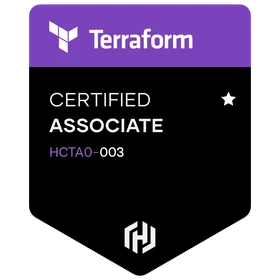
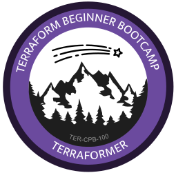
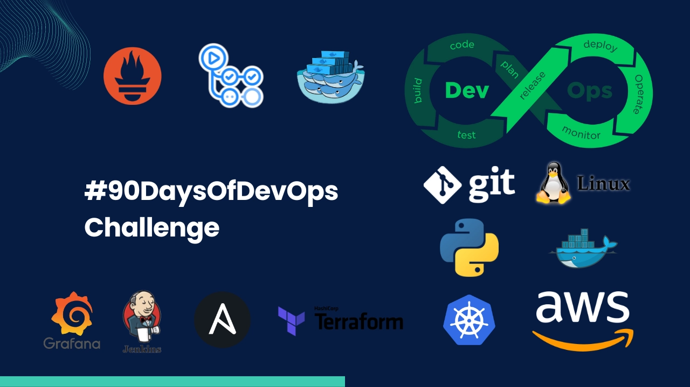
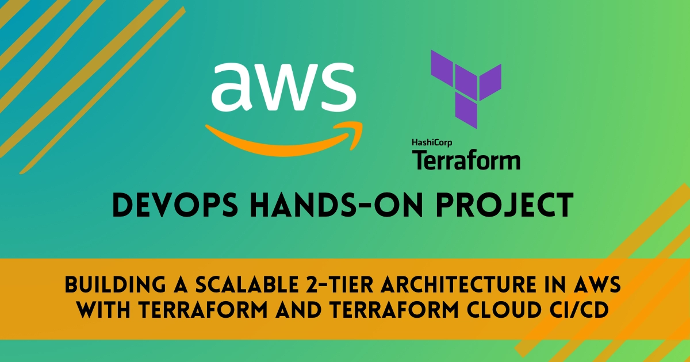
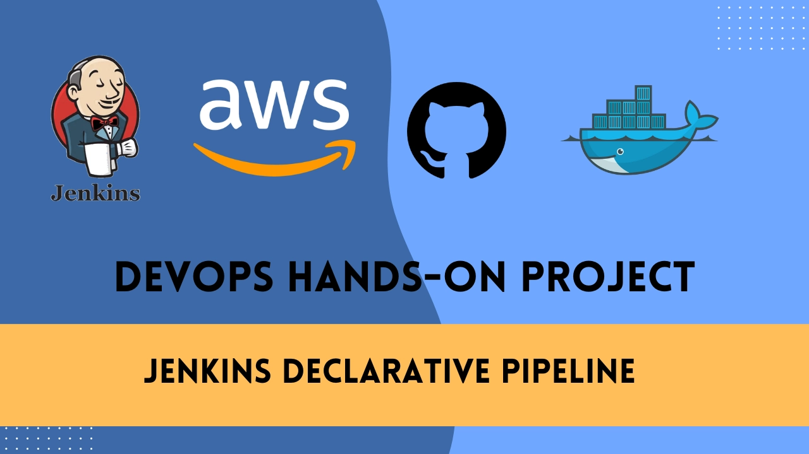
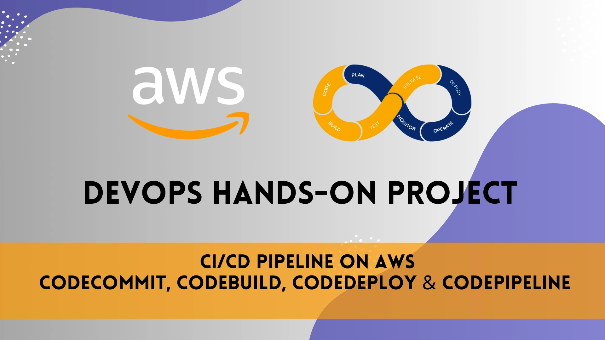
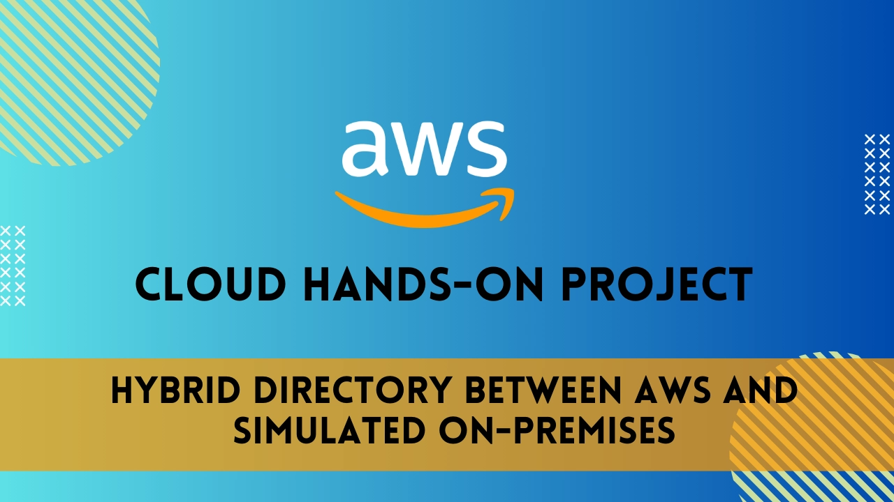
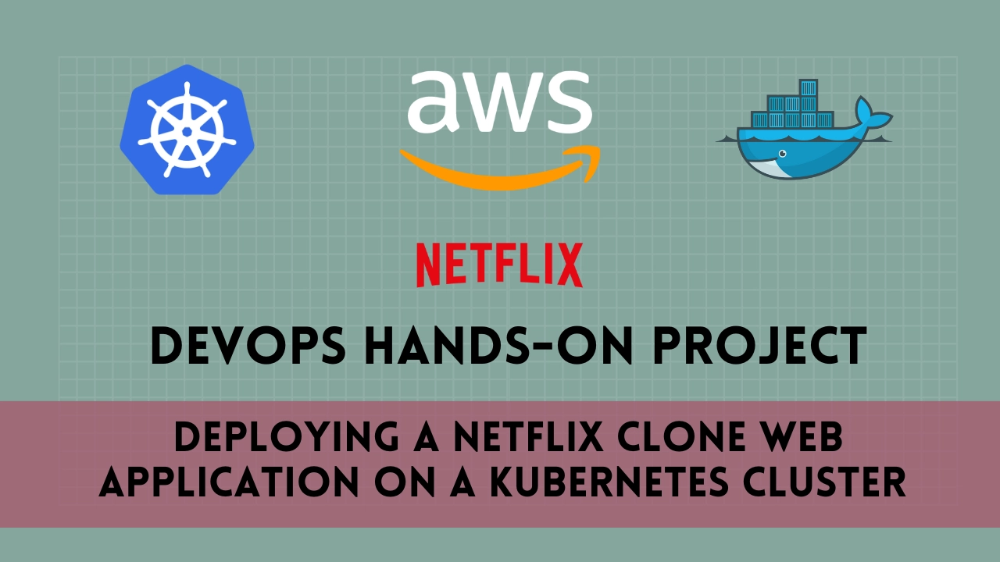
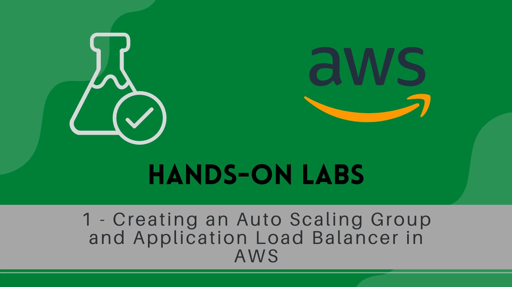

Esteban Moreno
Building scalable, reliable infrastructure on AWS with Kubernetes, Terraform & CI/CD. Currently at X-Tention — automating cloud infrastructure and optimizing observability.
About
I'm a DevOps Engineer specialising in AWS, Kubernetes, and Terraform — building the infrastructure that lets engineering teams ship faster and operate with confidence. I focus on turning manual, fragile processes into automated, reliable systems: from provisioning cloud resources and managing container platforms, to wiring up full observability stacks and securing CI/CD pipelines end-to-end.
At X-Tention I work across cloud automation, Kubernetes platform engineering, and CI/CD pipeline development. In practice that means managing EKS clusters with Helm and ArgoCD, building GitLab CI/CD pipelines with security and compliance baked in, and running a production observability stack — Prometheus, Thanos, Grafana, Loki, and Alertmanager — across distributed environments.
Outside work I've published 108 articles on AWS and DevOps at blog.estebanmoreno.link, completed the #90DaysOfDevOps challenge, and hold certifications across AWS, Linux, Terraform, and Networking. Continuous learning isn't a line on my CV — it's how I work.
Tech Stack
Certifications
06










108 posts on AWS,
DevOps & Cloud
Deep dives into Kubernetes, Terraform, CI/CD pipelines, observability stacks and more — from hands-on experience in production.
Read the blog →Get in Touch
Whether it's a role, a collaboration, or just a DevOps question — I'm always happy to connect.